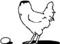

\1\2ğaç\3
Kafası olmayan bir piliç ne kadar yaşayabilir?

Yaklaşık iki yıl.
10 Aralık 1945’te Colorado’nun Fruita şehrinde semiz bir horoz yavrusunun kafası kesildi ve bu horoz yavrusu yaşamaya devam etti. Bu horozun kafasını kesen balta inanılmaz bir biçimde horozun şahdamarını ıskaladı ve beyin sapının yaşamasına, hatta büyümesine yetecek kadarlık kısmını boynunda bıraktı.
Mike olarak tanınan bu horoz ulusal bir şöhret olarak ülkeyi dolaştı; Time ve Life dergilerine çıktı. Sahibi Lloyd Olsen ABD’nin tamamında düzenlediği etkinliklerde “Kafası Olmayan İnanılmaz Horoz Mike”ı göstermek için 25 sent ücret aldı. Mike kart bir pilicin kafasını alarak eksiksiz bir biçimde boy gösterebilecek durumdaydı. Aslında Mike’ın kafasını Olsen’in kedisi yemişti. Mike şöhretinin doruğunda ayda 4500 dolar kazanıyordu ve kendisine 10.000 dolar değer biçiliyordu. Onun başarısı, piliçlerin kafasını kesen bir dizi taklitçiyi beraberinde getirdi, ama bu taklitçilerin talihsiz kurbanlarından hiçbiri 1-2 günden fazla yaşamadı.
Mike’ın yemeği ve suyu bir göz damlalığıyla veriliyordu. Kafasını kaybetmesinin ardından geçen 2 yılık süre zarfında yaklaşık 2,7 kilo aldı ve mutlu bir biçimde boynuyla yiyecekleri “gagalayarak” ve tüylerini düzelterek vaktini geçirdi. Mike’ı çok iyi tanıyan biri şu yorumu yaptı: “O, kafası olmadığının farkında olmayan büyük, şişman bir piliçti.”
Felaket, Arizona’nın Phoenix şehrindeki bir otel odasında geceleyin meydana geldi. Mike’ın nefesi tıkandı ve Olsen’in korktuğu başına geldi: Göz damlalığını önceki günkü gösteride bırakmıştı. Solunum yollarını açamayınca, Mike nefesi kesilerek öldü.
Mike Colorado’da hâlâ bir idoldür ve Fruita 1999’dan bu yana her Mayıs ayında onun ölümünü “Kafasız Horoz Mike” günüyle anmaktadır.